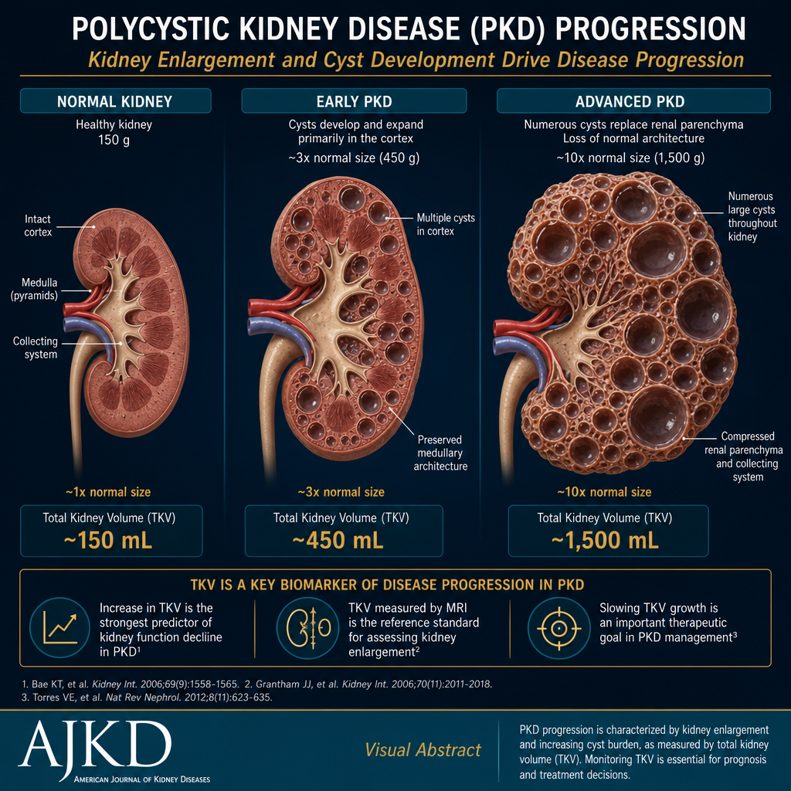
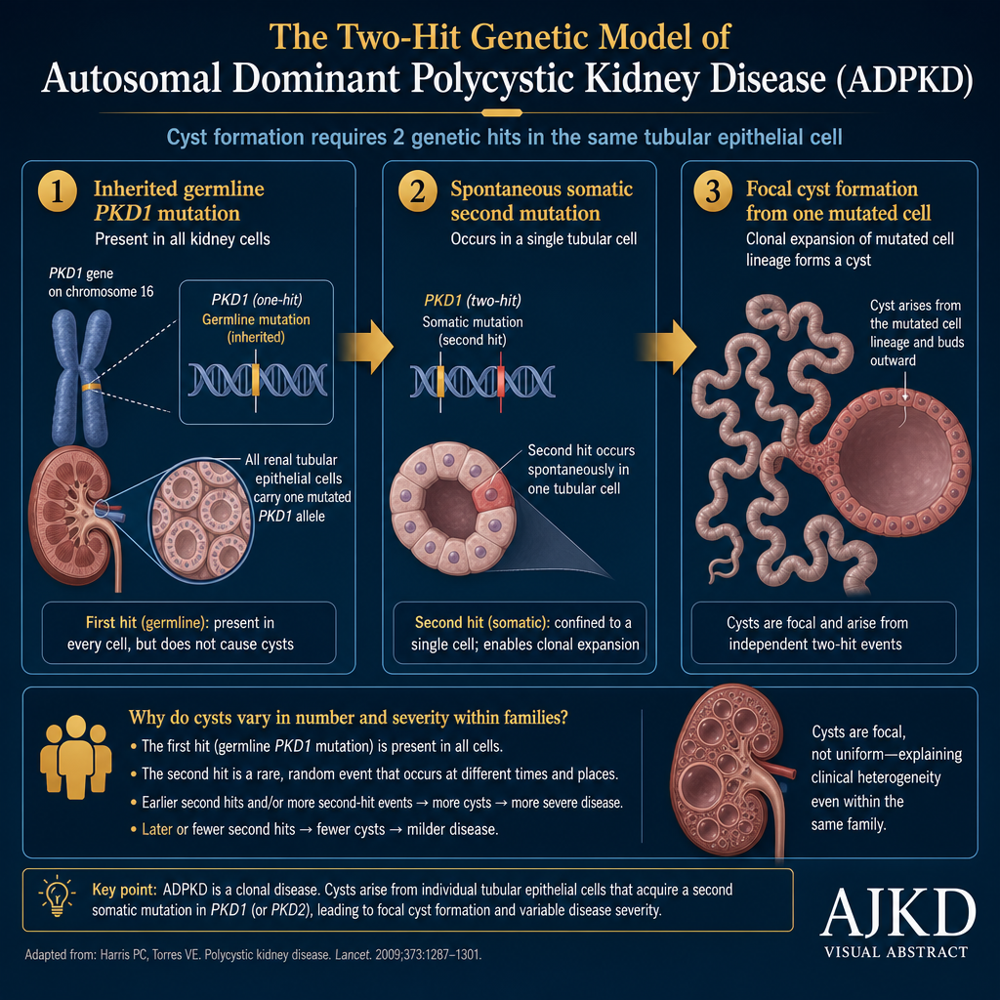
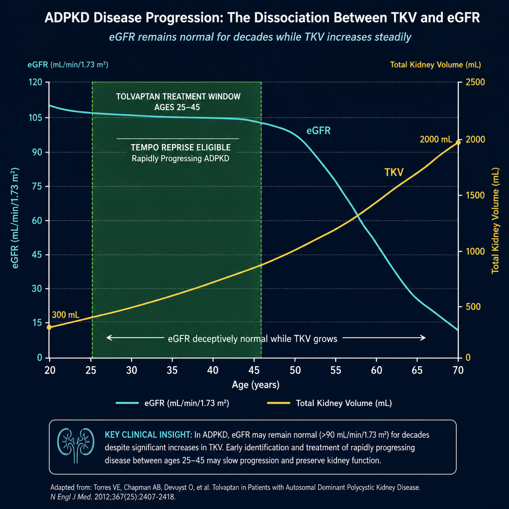
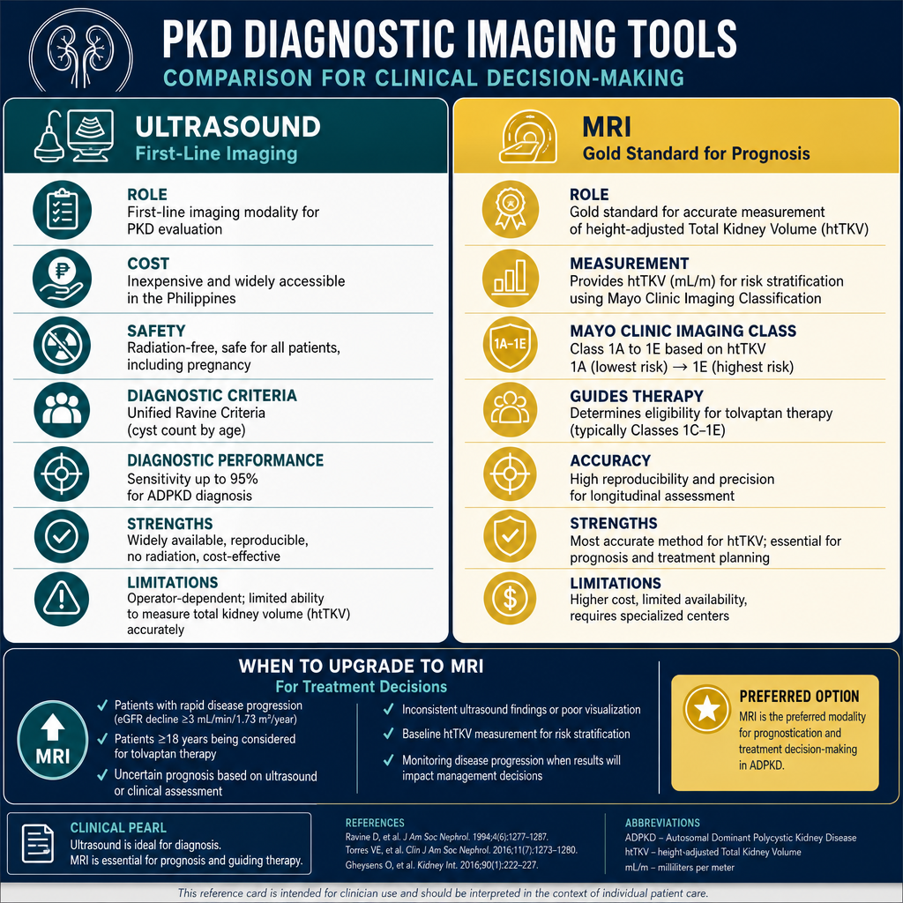
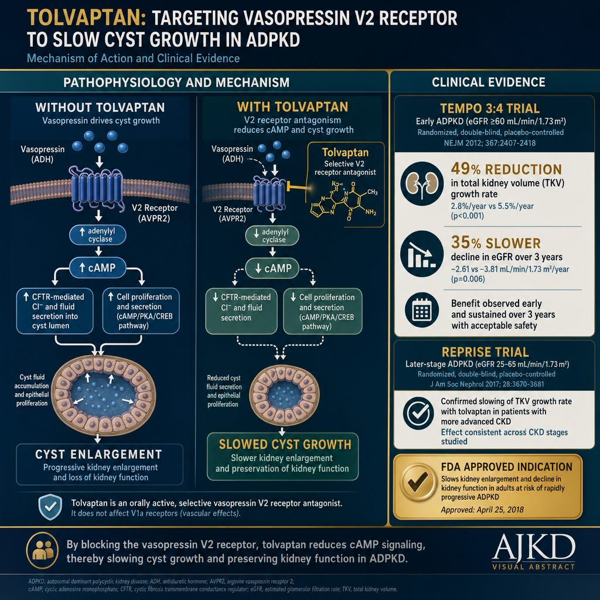

What Is Polycystic Kidney Disease?Ano ang Polycystic Kidney Disease?Unsa ang Polycystic Kidney Disease? Ano ing Polycystic Kidney Disease?
Polycystic kidney disease (PKD) is a genetic disorder in which fluid-filled cysts develop throughout the kidney, progressively replacing normal kidney tissue. Over decades, the kidneys enlarge to many times their normal size — sometimes reaching the size of a football — while eGFR silently declines until kidney failure occurs, typically in the 5th–6th decade of life for ADPKD.Ang polycystic kidney disease (PKD) ay isang genetic na karamdaman kung saan nagtataglay ng mga cyst na puno ng likido sa buong bato, na unti-unting pinapalitan ang normal na tisyu ng bato. Sa loob ng mga dekada, lumalaki ang mga bato nang maraming beses sa normal nitong sukat — minsan ay kasingsukat ng isang bola ng football — habang tahimik na bumababa ang eGFR hanggang sa maganap ang pagkabigo ng bato, karaniwang sa ika-5 hanggang ika-6 na dekada ng buhay para sa ADPKD.Ang polycystic kidney disease (PKD) usa ka genetic nga sakit diin nagtubo ang mga cyst nga puno sa tubig sa tibuok kidney, unti-unting giilisan ang normal nga tisyu sa kidney. Sa sulod sa mga dekada, nagpadako ang mga kidney og daghang pilo sa normal nilang gidak-on — usahay moabut sa gidak-on sa usa ka bola sa football — samtang hilom nga nagkunhod ang eGFR hangtod mahitabo ang pagkapakyas sa kidney, kasagaran sa ika-5 hangtod ika-6 nga dekada sa kinabuhi alang sa ADPKD. Ing polycystic kidney disease (PKD) ya metung a genetic a karamdaman nung saan nagtataglay ning deng cyst a puno ning likido king buong batu, a unti-unting pinapalitan ing normal a tisyu ning batu. King loob ning deng dekada, lumalaki ing deng batu nang dacal a beses king normal nitong sukat — misan ya kasingsukat ning metung a bola ning football — habang tahimik a bumababa ing eGFR anggang king maganap ing pagkabigo ning batu, karaniwang king ika-5 anggang ika-6 a dekada ning biye para king ADPKD.

PKD kidneys can grow to weigh over 10× the normal kidney weight. Total Kidney Volume (TKV) measured by MRI is the best predictor of progression rate — used to guide treatment decisions with tolvaptan.
![Polycystic Kidney Disease visual clinical abstract infographic: dark navy background with teal header, three columns covering genetics and progression (PKD1/PKD2 inheritance, ESKD avg age 54y, kidneys enlarge 10× normal, Mayo Classification 1A–1E), key complications (hypertension, hematuria, liver cysts 80%, MVP 25%, intracranial aneurysms 5–10%, worst headache of life = emergency), and management and therapy (BP target <110/75 mmHg, ACE/ARB, hydration 3–4 L/day, tolvaptan blocks V2 receptor reducing TKV 49%, NSAIDs absolutely contraindicated); four data metric cards at the bottom: 1:500 adults, ESKD avg 54y, 49% TKV reduction, 3–4 L/day water](../images/pkd-visual-clinical-abstract-umj.webp)
ADPKD vs ARPKD — The Two Types of PKDADPKD vs ARPKD — Ang Dalawang Uri ng PKDADPKD vs ARPKD — Ang Duha ka Klase sa PKD ADPKD vs ARPKD — Ing Dalawang Uri ning PKD
ADPKD — Autosomal Dominant (most common)ADPKD — Autosomal Dominant (pinakakaraniwan)ADPKD — Autosomal Dominant (pinaka-kasagaran) ADPKD — Autosomal Dominant (pinakakaraniwan)
Inheritance: One mutated copy of PKD1 or PKD2 gene causes disease. Each child of an affected parent has a 50% chance of inheriting it.
Onset: Cysts begin in infancy/childhood but symptoms typically emerge in the 3rd–4th decade. Most patients don't know they have it until an incidental ultrasound or family screening.
Progression to ESKD: Average age 54 (PKD1 mutation) or 74 (PKD2 mutation).
Prevalence: 1 in 400–1,000 people — the 4th most common cause of ESKD worldwide.Pamana: Isang mutadong kopya ng gene na PKD1 o PKD2 ang nagdudulot ng sakit. Bawat anak ng isang apektadong magulang ay may 50% na pagkakataon na mamana ito.
Simula: Nagsisimula ang mga cyst sa pagkasanggol/pagkabata ngunit ang mga sintomas ay karaniwang lumalabas sa ika-3 hanggang ika-4 na dekada. Karamihan sa mga pasyente ay hindi nalalaman na mayroon nito hanggang sa maabot ang ultrasound o pagsusuri ng pamilya.
Pag-unlad sa ESKD: Karaniwang edad na 54 (PKD1 mutasyon) o 74 (PKD2 mutasyon).
Prevalensya: 1 sa bawat 400–1,000 tao — ika-4 na pinaka-karaniwang sanhi ng ESKD sa buong mundo.Pamunon: Usa ka mutadong kopya sa gene nga PKD1 o PKD2 ang nagdulot sa sakit. Matag bata sa usa ka apektadong ginikanan adunay 50% nga kahigayonan sa pagpanunod niini.
Sinugdanan: Nagsugod ang mga cyst sa pagkabata apan ang mga simtoma kasagaran motungha sa ika-3 hangtod ika-4 nga dekada. Kadaghanan sa mga pasyente wala nahibalo nga aduna niini hangtod sa aksidental nga ultrasound o pagsusi sa pamilya.
Pag-uswag sa ESKD: Kasagaran nga edad nga 54 (PKD1 mutasyon) o 74 (PKD2 mutasyon).
Prevalensya: 1 sa matag 400–1,000 ka tawo — ika-4 nga pinaka-kasagarang hinungdan sa ESKD sa tibuok kalibutan.
Pamana: Metung a mutadong kopya ning gene a PKD1 o PKD2 ing nagdudulot ning sakit. Bawat anak ning metung a apektadong magulang ya atin 50% a pagkakabanua a mamana ini.
Simula: Nagsisimula ing deng cyst king pagkasanggol/pagkabata ngarud ing deng sintomas ya karaniwang lumalabas king ika-3 anggang ika-4 a dekada. Kadaklan king deng pasyente ya ali nalalaman a mayroon nini anggang king maabot ing ultrasound o pagsusuri ning pamilya.
Pag-unlad king ESKD: Karaniwang edad a 54 (PKD1 mutasyon) o 74 (PKD2 mutasyon).
Prevalensya: 1 king bawat 400–1,000 tao — ika-4 a pinaka-karaniwang sanhi ning ESKD king buong mundo.
ARPKD — Autosomal Recessive (rare, childhood)ARPKD — Autosomal Recessive (bihira, pagkabata)ARPKD — Autosomal Recessive (bihira, pagkabata) ARPKD — Autosomal Recessive (bihira, pagkabata)
Inheritance: Both copies of PKHD1 gene must be mutated. Both parents must be carriers (usually unaffected). Risk per child of two carriers: 25%.
Onset: Prenatal or newborn period. Severe cases detected on fetal ultrasound. Associated with pulmonary hypoplasia if severe prenatal presentation (Potter sequence).
Progression: Rapid — many children require dialysis in the first decade of life. Associated with congenital hepatic fibrosis in almost all cases.
Prevalence: 1 in 20,000 — rare but devastating.Pamana: Pareho ang mga kopya ng gene na PKHD1 ay dapat mutado. Pareho ang mga magulang ay dapat na carrier (karaniwang walang sakit). Panganib bawat anak ng dalawang carrier: 25%.
Simula: Prenatal o panahon ng bagong silang. Ang mga malubhang kaso ay natutuklas sa fetal ultrasound. Kaugnay ng pulmonary hypoplasia kung malubha ang prenatal na pagpapakita (Potter sequence).
Pag-unlad: Mabilis — maraming bata ang nangangailangan ng dialysis sa unang dekada ng buhay. Kaugnay ng congenital hepatic fibrosis sa halos lahat ng kaso.
Prevalensya: 1 sa 20,000 — bihira ngunit mapangwasak.Pamunon: Ang duha ka kopya sa gene nga PKHD1 kinahanglan mutado. Ang duha ka ginikanan kinahanglan nga carrier (kasagaran walay sakit). Risgo matag bata sa duha ka carrier: 25%.
Sinugdanan: Prenatal o panahon sa bag-ong panganak. Ang mga grabe nga kaso nakit-an sa fetal ultrasound. Konektado sa pulmonary hypoplasia kung grabe ang prenatal nga pagpakita (Potter sequence).
Pag-uswag: Dali — daghang mga bata ang nanginahanglan ug dialysis sa unang dekada sa kinabuhi. Konektado sa congenital hepatic fibrosis sa hapit tanan nga kaso.
Prevalensya: 1 sa 20,000 — bihira apan makagun-ob.
Pamana: Pareho ing deng kopya ning gene a PKHD1 ya dapat mutado. Pareho ing deng magulang ya dapat a carrier (karaniwang alang sakit). Panganib bawat anak ning dalawang carrier: 25%.
Simula: Prenatal o panahon ning bagong silang. Ing deng malubhang kaso ya natutuklas king fetal ultrasound. Kaugnay ning pulmonary hypoplasia nung malubha ing prenatal a pagpapakita (Potter sequence).
Pag-unlad: Mabilis — dacal a bata ing nangangailangan ning dialysis king unang dekada ning biye. Kaugnay ning congenital hepatic fibrosis king halos amin ning kaso.
Prevalensya: 1 king 20,000 — bihira ngarud mapangwasak.
![Side-by-side comparison of ADPKD and ARPKD: left panel shows a Filipino man in his 40s in a clinic gown with a distended abdomen beside a 3D cross-section of a kidney filled with large fluid-filled cysts, with an autosomal dominant inheritance family tree (1 in 500 adults); right panel shows a newborn Filipino infant in a NICU incubator with a massively distended abdomen beside a sponge-like kidney with thousands of tiny microscopic cysts throughout, with a recessive inheritance tree (1 in 20,000 births)](../images/pkd-adpkd-vs-arpkd-comparison-diptych.webp)
Genetics of PKD — How One Gene Causes Thousands of CystsGenetics ng PKD — Paano Nagdudulot ang Isang Gene ng Libu-libong CystGenetics sa PKD — Unsaon sa Usa ka Gene Pagdulot sa Libo-libo ka Cyst Genetics ning PKD — Paano Nagdudulot ing Metung a Gene ning Libu-libong Cyst

PKD requires two genetic hits — the inherited germline mutation plus a spontaneous somatic mutation in any single kidney tubule cell. This "two-hit model" explains why cysts are focal (only some tubules) and why disease severity varies even within the same family.
PKD1 gene mutation (chromosome 16)Mutasyon ng gene na PKD1 (chromosome 16)Mutasyon sa gene nga PKD1 (chromosome 16) Mutasyon ning gene a PKD1 (chromosome 16)
Encodes polycystin-1 (PC1) — a membrane protein in primary cilia that senses fluid flow and mechanical forces in tubules. PKD1 mutations cause ~75% of ADPKD cases. More severe disease — median ESKD age 54. Over 1,500 different mutations identified. PKD1 is one of the largest and most complex genes in the human genome.Nag-encode ng polycystin-1 (PC1) — isang membrane protein sa primary cilia na nagtatuklas ng daloy ng likido at mga mechanical na puwersa sa mga tubulo. Ang mga mutasyon sa PKD1 ay nagdudulot ng ~75% ng mga kaso ng ADPKD. Mas malubhang sakit — median na edad ng ESKD ay 54. Mahigit 1,500 iba't ibang mutasyon ang natukoy. Ang PKD1 ay isa sa pinakamalaki at pinaka-kumplikadong gene sa genome ng tao.Nag-encode sa polycystin-1 (PC1) — usa ka membrane protein sa primary cilia nga nagsensya sa daloy sa tubig ug mga mechanical nga puwersa sa mga tubulo. Ang mga mutasyon sa PKD1 nagdulot sa ~75% sa mga kaso sa ADPKD. Mas grabe nga sakit — median nga edad sa ESKD mao ang 54. Sobra sa 1,500 ka lain-laing mutasyon ang nakit-an. Ang PKD1 usa sa pinakadako ug pinaka-komplikado nga gene sa genome sa tawo. Nag-encode ning polycystin-1 (PC1) — metung a membrane protein king primary cilia a nagtatuklas ning daloy ning likido at deng mechanical a puwersa king deng tubulo. Ing deng mutasyon king PKD1 ya nagdudulot ning ~75% ning deng kaso ning ADPKD. Mas malubhang sakit — median a edad ning ESKD ya 54. Mahigit 1,500 iba't ibang mutasyon ing natukoy. Ing PKD1 ya metung king pinakamalaki at pinaka-kumplikadong gene king genome ning tao.
PKD2 gene mutation (chromosome 4)Mutasyon ng gene na PKD2 (chromosome 4)Mutasyon sa gene nga PKD2 (chromosome 4) Mutasyon ning gene a PKD2 (chromosome 4)
Encodes polycystin-2 (PC2) — a calcium channel that works with PC1 in primary cilia. PKD2 mutations cause ~15% of ADPKD. Milder disease — median ESKD age 74. In ~10% of cases, no PKD1 or PKD2 mutation is found — likely other genes (GANAB, DNAJB11, IFT140) or de novo mutations.Nag-encode ng polycystin-2 (PC2) — isang calcium channel na gumagana kasama ng PC1 sa primary cilia. Ang mga mutasyon sa PKD2 ay nagdudulot ng ~15% ng ADPKD. Mas banayad na sakit — median na edad ng ESKD ay 74. Sa ~10% ng mga kaso, walang mutasyon sa PKD1 o PKD2 ang natuklasan — malamang na iba pang mga gene (GANAB, DNAJB11, IFT140) o de novo mutations.Nag-encode sa polycystin-2 (PC2) — usa ka calcium channel nga nagtrabaho uban sa PC1 sa primary cilia. Ang mga mutasyon sa PKD2 nagdulot sa ~15% sa ADPKD. Mas mahinay nga sakit — median nga edad sa ESKD mao ang 74. Sa ~10% sa mga kaso, walay mutasyon sa PKD1 o PKD2 ang nakit-an — tingali uban pang mga gene (GANAB, DNAJB11, IFT140) o de novo mutations. Nag-encode ning polycystin-2 (PC2) — metung a calcium channel a gumagana kasama ning PC1 king primary cilia. Ing deng mutasyon king PKD2 ya nagdudulot ning ~15% ning ADPKD. Mas banayad a sakit — median a edad ning ESKD ya 74. King ~10% ning deng kaso, alang mutasyon king PKD1 o PKD2 ing natuklasan — malamang a iba pang deng gene (GANAB, DNAJB11, IFT140) o de novo mutations.
How PKD Progresses — The mTOR and cAMP PathwaysPaano Sumusulong ang PKD — Ang mga Landas na mTOR at cAMPUnsaon Pag-uswag sa PKD — Ang mga Dalan sa mTOR ug cAMP Paano Sumusulong ing PKD — Ing deng Landas a mTOR at cAMP

eGFR is deceptively normal for decades — the kidney's enormous reserve masks progressive cyst growth. By the time eGFR begins falling steeply, TKV has already increased dramatically. TKV growth rate (ml/year) is the key prognostic marker.
The cAMP pathway — cyst driverAng landas na cAMP — nagpapalaki ng cystAng dalan sa cAMP — nagpatubo sa cyst Ing landas a cAMP — nagpapalaki ning cyst
Loss of polycystin signaling causes intracellular cAMP to accumulate — activating mTOR and MAPK pathways that drive tubular cell proliferation and fluid secretion into the cyst lumen. The cyst keeps growing because the cells lining it divide abnormally AND secrete fluid inward. Vasopressin (ADH) is the primary stimulus for cAMP in collecting duct cells — which is why staying well-hydrated (reducing ADH levels) and tolvaptan (blocking the vasopressin receptor) both slow cyst growth.Ang pagkawala ng polycystin signaling ay nagdudulot ng pag-iipon ng intracellular cAMP — pag-activate ng mga landas na mTOR at MAPK na nagpapatakbo ng proliferasyon ng tubular cell at pagtatago ng likido sa loob ng cyst. Patuloy na lumalaki ang cyst dahil ang mga selula na nagtatanggal nito ay abnormal na nahahati AT nagtatago ng likido sa loob. Ang vasopressin (ADH) ang pangunahing stimulus para sa cAMP sa mga collecting duct cell — kaya naman ang pananatiling maayos na napapanatiling hydrated (nagpapababa ng antas ng ADH) at tolvaptan (nagharang sa vasopressin receptor) ay parehong nagpapabagal ng paglaki ng cyst.Ang pagkawala sa polycystin signaling nagdulot sa pag-iipon sa intracellular cAMP — pag-activate sa mga dalan sa mTOR ug MAPK nga nagpadagan sa proliferasyon sa tubular cell ug pagtago sa tubig sulod sa cyst. Nagpadayon sa pagtubo ang cyst tungod kay ang mga selula nga nagtabon niini abnormal nga nagbahin UG nagtago sa tubig sa sulod. Ang vasopressin (ADH) ang pangunahing stimulus alang sa cAMP sa mga collecting duct cell — mao nga ang panagtago og maayo nga napanatiling hydrated (nagpaubos sa antas sa ADH) ug tolvaptan (nagbabag sa vasopressin receptor) parehas nga nagpahinay sa pagtubo sa cyst. Ing pagkaala ning polycystin signaling ya nagdudulot ning pag-iipon ning intracellular cAMP — pag-activate ning deng landas a mTOR at MAPK a nagpapatakbo ning proliferasyon ning tubular cell at pagtatago ning likido king loob ning cyst. Patuloy a lumalaki ing cyst dahil ing deng selula a nagtatanggal nini ya abnormal a nahahati AT nagtatago ning likido king loob. Ing vasopressin (ADH) ing pangunahing stimulus para king cAMP king deng collecting duct cell — kaya naman ing pananatiling maayos a napapanatiling hydrated (nagpapababa ning antas ning ADH) at tolvaptan (nagharang king vasopressin receptor) ya parehong nagpapabagal ning paglaki ning cyst.
Why hydration slows PKDBakit nagpapabagal ang pag-inom ng tubig sa PKDNgano nga nagpahinay ang pag-inom sa tubig sa PKD Bakit nagpapabagal ing pag-inom ning danum king PKD
When you drink enough water to keep urine pale and urine osmolality low, your pituitary gland reduces vasopressin (ADH) secretion. Less vasopressin = less cAMP signaling in collecting duct cells = slower cyst epithelial proliferation. Multiple observational studies show PKD patients with higher water intake have slower TKV growth. Target: 3–4 liters of water per day (plain water — not juice or sweetened drinks) to keep urine osmolality below 280 mOsm/kg.Kapag uminom kayo ng sapat na tubig upang mapanatiling maputla ang ihi at mababa ang osmolality ng ihi, binabawasan ng inyong pituitary gland ang pagtatago ng vasopressin (ADH). Mas kaunting vasopressin = mas kaunting cAMP signaling sa mga collecting duct cell = mas mabagal na proliferasyon ng cyst epithelial. Maraming observational studies ang nagpapakita na ang mga pasyenteng may PKD na may mas mataas na pag-inom ng tubig ay may mas mabagal na paglaki ng TKV. Target: 3–4 litro ng tubig bawat araw (simpleng tubig — hindi juice o matamis na inumin) upang mapanatiling mababa ang osmolality ng ihi sa ibaba ng 280 mOsm/kg.Kung moinom kamo og igo nga tubig aron mapanatiling mapulaw ang ihi ug ubos ang osmolality sa ihi, nagpaubos ang inyong pituitary gland sa pagtago sa vasopressin (ADH). Mas diyutay nga vasopressin = mas diyutay nga cAMP signaling sa mga collecting duct cell = mas hinay nga proliferasyon sa cyst epithelial. Daghang observational studies nagpakita nga ang mga pasyente nga adunay PKD nga adunay mas taas nga pag-inom sa tubig adunay mas hinay nga pagtubo sa TKV. Target: 3–4 litro sa tubig matag adlaw (simpleng tubig — dili juice o tam-is nga inumon) aron mapanatiling ubos ang osmolality sa ihi sa ubos sa 280 mOsm/kg. Nung uminom kayu ning sapat a danum upang mapanatiling maputla ing ihi at mababa ing osmolality ning ihi, binabawasan ning inyu pituitary gland ing pagtatago ning vasopressin (ADH). Mas kaunting vasopressin = mas kaunting cAMP signaling king deng collecting duct cell = mas mabagal a proliferasyon ning cyst epithelial. Dacal a observational studies ing nagpapakita a ing deng pasyenteng atin PKD a atin mas matas a pag-inom ning danum ya atin mas mabagal a paglaki ning TKV. Target: 3–4 litro ning danum bawat aldo (simpleng danum — ali juice o matamis a inumin) upang mapanatiling mababa ing osmolality ning ihi king ibaba ning 280 mOsm/kg.
Symptoms and Complications of ADPKDMga Sintomas at Komplikasyon ng ADPKDMga Simtoma ug Komplikasyon sa ADPKD Deng Sintomas at Komplikasyon ning ADPKD
Kidney manifestationsMga pagpapakita sa batoMga pagpakita sa kidney Deng pagpapakita king batu
Flank/abdominal pain (cyst expansion, hemorrhage, or infection) · Hematuria (blood in urine) — often first symptom · Hypertension — early and very common (renin-angiotensin activation from cyst compression of tubules) · Recurrent UTI/pyelonephritis · Kidney stones (uric acid, calcium oxalate) in 20–36% · Progressive CKD → ESKD.Sakit sa tagiliran/tiyan (pagpalaki ng cyst, pagdurugo, o impeksyon) · Hematuria (dugo sa ihi) — madalas na unang sintomas · Hypertension — maaga at napakakaraniwan (pag-activate ng renin-angiotensin mula sa pagpindot ng cyst sa mga tubulo) · Paulit-ulit na UTI/pyelonephritis · Mga bato sa bato (uric acid, calcium oxalate) sa 20–36% · Progresibong CKD → ESKD.Sakit sa kilid/tiyan (pagpadako sa cyst, pagdugo, o impeksyon) · Hematuria (dugo sa ihi) — kasagaran unang simtoma · Hypertension — sayo ug kasagarang kasagaran (pag-activate sa renin-angiotensin gikan sa pagpugong sa cyst sa mga tubulo) · Paulit-ulit nga UTI/pyelonephritis · Mga bato sa kidney (uric acid, calcium oxalate) sa 20–36% · Progresibong CKD → ESKD. Sakit king tagiliran/tiyan (pagpalaki ning cyst, pagdurugo, o impeksyon) · Hematuria (daya king ihi) — madalas a unang sintomas · Hypertension — maaga at napakakaraniwan (pag-activate ning renin-angiotensin mula king pagpindot ning cyst king deng tubulo) · Paulit-ulit a UTI/pyelonephritis · Deng batu king batu (uric acid, calcium oxalate) king 20–36% · Progresibong CKD → ESKD.
Extra-kidney manifestationsMga pagpapakita sa labas ng batoMga pagpakita sa gawas sa kidney Deng pagpapakita king labas ning batu
Liver cysts — 80% by age 40 (usually asymptomatic but can cause massive hepatomegaly) · Intracranial aneurysms — 5–10% (family history of aneurysm rupture = screen with MRA) · Mitral valve prolapse — 25% · Aortic root dilation · Seminal vesicle cysts · Pancreatic cysts (rare).Mga cyst sa atay — 80% sa edad 40 (karaniwang walang sintomas ngunit maaaring magdulot ng napakalaking hepatomegaly) · Intracranial aneurysms — 5–10% (kasaysayan ng pamilya ng pagputok ng aneurysm = suri gamit ang MRA) · Mitral valve prolapse — 25% · Aortic root dilation · Mga cyst sa seminal vesicle · Mga cyst sa pancreas (bihira).Mga cyst sa atay — 80% sa edad 40 (kasagaran walay simtoma apan mahimong magdulot sa dakong hepatomegaly) · Intracranial aneurysms — 5–10% (kasaysayan sa pamilya sa pagbuto sa aneurysm = susi gamit ang MRA) · Mitral valve prolapse — 25% · Aortic root dilation · Mga cyst sa seminal vesicle · Mga cyst sa pancreas (bihira). Deng cyst king atay — 80% king edad 40 (karaniwang alang sintomas ngarud maaaring magdulot ning napakalaking hepatomegaly) · Intracranial aneurysms — 5–10% (kasaysayan ning pamilya ning pagputok ning aneurysm = suri gamit ing MRA) · Mitral valve prolapse — 25% · Aortic root dilation · Deng cyst king seminal vesicle · Deng cyst king pancreas (bihira).
PKD emergencies — go to ERMga emergency sa PKD — pumunta sa ERMga emergency sa PKD — adto sa ER Deng emergency king PKD — pumunta king ER
Sudden severe flank pain with fever — cyst infection (IV antibiotics needed; most oral antibiotics don't penetrate cysts well — use fluoroquinolones). Sudden severe headache ("worst headache of my life") — possible intracranial aneurysm rupture (rupture risk is 4× higher in PKD than general population). Gross hematuria not settling in 5–7 days.Biglaang matinding sakit sa tagiliran na may lagnat — impeksyon ng cyst (kailangan ng IV antibiotics; karamihan sa oral antibiotics ay hindi maayos na tumatahak sa mga cyst — gumamit ng fluoroquinolones). Biglaang matinding sakit ng ulo ("pinaka-masakit na sakit ng ulo ng aking buhay") — posibleng pagputok ng intracranial aneurysm (4× mas mataas ang panganib ng pagputok sa PKD kaysa sa pangkalahatang populasyon). Gross hematuria na hindi nag-aayos sa loob ng 5–7 araw.Kalit nga grabe nga sakit sa kilid nga adunay hilanat — impeksyon sa cyst (kinahanglan ang IV antibiotics; kadaghanan sa oral antibiotics dili maayo nga makasulod sa mga cyst — gamiton ang fluoroquinolones). Kalit nga grabe nga sakit sa ulo ("pinaka-masakit nga sakit sa ulo sa akong kinabuhi") — posibleng pagbuto sa intracranial aneurysm (4× mas taas ang risgo sa pagbuto sa PKD kaysa sa kinatibuk-ang populasyon). Gross hematuria nga dili mohunong sulod sa 5–7 ka adlaw. Biglaang matinding sakit king tagiliran a atin lagnat — impeksyon ning cyst (kailangan ning IV antibiotics; kadaklan king oral antibiotics ya ali maayos a tumatahak king deng cyst — gumamit ning fluoroquinolones). Biglaang matinding sakit ning ulo ("pinaka-masakit a sakit ning ulo ning aking biye") — posibleng pagputok ning intracranial aneurysm (4× mas matas ing panganib ning pagputok king PKD kaysa king pangkalahatang populasyon). Gross hematuria a ali nag-aayos king loob ning 5–7 aldo.
![Triptych of PKD symptoms: left panel shows a Filipino woman pressing her flank with an anatomical overlay of cystic kidneys and four symptom icons (hematuria, recurrent UTIs, hypertension, abdominal mass); center panel shows a body silhouette with highlighted organs showing brain with aneurysm (5–10% intracranial aneurysm), heart with MVP wave (25% mitral valve prolapse), and liver with cysts (80% liver cysts); right panel on red background shows a Filipino man in extreme distress clutching his head with the text Worst headache of life → ER now and an ambulance icon](../images/pkd-symptoms-kidney-extra-kidney-emergency.webp)
Diagnosis of PKDPag-diagnose ng PKDPag-diagnose sa PKD Pag-diagnose ning PKD

Ultrasound is the first-line diagnostic tool — inexpensive, radiation-free, and widely available in the Philippines. MRI with Total Kidney Volume measurement is the gold standard for monitoring progression and guiding tolvaptan therapy decisions.
| InvestigationPagsusuriPagsusi Pagsusuri | PurposeLayuninKatuyoan Layunin | When to orderKailan mag-orderKanus-a mag-order Kailan mag-order |
|---|---|---|
| Kidney ultrasoundUltrasound ng batoUltrasound sa kidney Ultrasound ning batu | Initial diagnosis, cyst counting, kidney sizePaunang diagnosis, pagbilang ng cyst, sukat ng batoUnang diagnosis, pagihap sa cyst, gidak-on sa kidney Paunang diagnosis, pagbilang ning cyst, sukat ning batu | All patients with suspected PKD or positive family historyLahat ng pasyenteng may pinaghihinalaang PKD o positibong kasaysayan ng pamilyaTanan nga mga pasyente nga may gihinahinalang PKD o positibong kasaysayan sa pamilya Amin ning pasyenteng atin pinaghihinalaang PKD o positibong kasaysayan ning pamilya |
| MRI kidney (TKV)MRI ng bato (TKV)MRI sa kidney (TKV) MRI ning batu (TKV) | Total Kidney Volume — best progression predictor and tolvaptan eligibilityKabuuang Dami ng Bato — pinakamahusay na tagahula ng pag-unlad at eligibilidad sa tolvaptanKinatibuk-ang Gidaghanon sa Kidney — pinaka-maayo nga tagahulagway sa pag-uswag ug eligibilidad sa tolvaptan Kabuuang Dami ning Batu — pinakamahusay a tagahula ning pag-unlad at eligibilidad king tolvaptan | When considering tolvaptan or for prognostication in Stage 1–3Kapag isinasaalang-alang ang tolvaptan o para sa prognosis sa Stage 1–3Kung gisalabtan ang tolvaptan o alang sa prognosis sa Stage 1–3 Nung isinasaalang-alang ing tolvaptan o para king prognosis king Stage 1–3 |
| Genetic testing (PKD1/PKD2)Genetic testing (PKD1/PKD2)Genetic testing (PKD1/PKD2) Genetic testing (PKD1/PKD2) | Confirm diagnosis without family history; guide reproductive decisions; living donor evaluationKumpirmahin ang diagnosis nang walang kasaysayan ng pamilya; gabayan ang mga desisyon sa reproduksyon; pagsusuri ng living donorPagkumpirma sa diagnosis nga walay kasaysayan sa pamilya; paggiya sa mga desisyon sa reproduksyon; pagsusi sa living donor Kumpirmahin ing diagnosis nang alang kasaysayan ning pamilya; gabayan ing deng desisyon king reproduksyon; pagsusuri ning living donor | Atypical presentation; young patients wanting to donate kidney; family planningHindi tipikal na pagpapakita; mga batang pasyenteng gustong mag-donate ng bato; family planningDili tipikal nga pagpakita; mga batan-ong pasyente nga gustong mag-donate sa kidney; family planning Ali tipikal a pagpapakita; deng batang pasyenteng gustong mag-donate ning batu; family planning |
| Brain MRABrain MRABrain MRA Brain MRA | Screen for intracranial aneurysmsPagsusuri para sa intracranial aneurysmsPagsusi alang sa intracranial aneurysms Pagsusuri para king intracranial aneurysms | Family history of aneurysm rupture; pre-surgery; patient requestKasaysayan ng pamilya ng pagputok ng aneurysm; bago sa operasyon; kahilingan ng pasyenteKasaysayan sa pamilya sa pagbuto sa aneurysm; wala pa sa operasyon; hangyo sa pasyente Kasaysayan ning pamilya ning pagputok ning aneurysm; bago king operasyon; kahilingan ning pasyente |
| Serum creatinine, eGFR, UACRSerum creatinine, eGFR, UACRSerum creatinine, eGFR, UACR Serum creatinine, eGFR, UACR | Monitor kidney functionSubaybayan ang function ng batoBantayan ang function sa kidney Subaybayan ing function ning batu | Every 6–12 months minimumBawat 6–12 buwan hindi bababaMatag 6–12 ka bulan labing menos Bawat 6–12 bulan ali bababa |
| Urine cultureUrine cultureUrine culture Urine culture | Detect cyst infections (which may not cause pyuria)Matukoy ang mga impeksyon ng cyst (na maaaring hindi magdulot ng pyuria)Makit-an ang mga impeksyon sa cyst (nga mahimong dili magdulot sa pyuria) Matukoy ing deng impeksyon ning cyst (a maaaring ali magdulot ning pyuria) | Fever + flank pain in PKD patientLagnat + sakit sa tagiliran sa pasyenteng may PKDHilanat + sakit sa kilid sa pasyente nga adunay PKD Lagnat + sakit king tagiliran king pasyenteng atin PKD |
Treatment of ADPKD — Standard of CarePaggamot ng ADPKD — Pamantayan ng PangangalagaPagtambal sa ADPKD — Pamantayan sa Pag-atiman Paggamut ning ADPKD — Pamantayan ning Pangangalaga
Blood pressure control — criticalKontrol sa presyon ng dugo — kritikalKontrol sa presyon sa dugo — kritikal Kontrol king presyon ning daya — kritikal
Hypertension in PKD is driven by RAAS activation from cyst compression of tubules — not primarily by volume. ACE inhibitors or ARBs are first-line — they directly suppress renin-angiotensin and may also reduce proteinuria. The HALT-PKD trial showed BP target <110/75 mmHg with ACE inhibitor significantly slowed TKV growth and preserved eGFR in young patients with preserved eGFR.Ang hypertension sa PKD ay pinapatakbo ng pag-activate ng RAAS mula sa pagpindot ng cyst sa mga tubulo — hindi pangunahin ng dami. Ang mga ACE inhibitor o ARB ay first-line — direkta nilang pinipigilan ang renin-angiotensin at maaari ding mabawasan ang protina sa ihi. Ipinakita ng HALT-PKD trial na ang target na BP na <110/75 mmHg gamit ang ACE inhibitor ay makabuluhang nagpapabagal ng paglaki ng TKV at nagpapanatili ng eGFR sa mga batang pasyenteng may napanatiling eGFR.Ang hypertension sa PKD gipadagan sa pag-activate sa RAAS gikan sa pagpugong sa cyst sa mga tubulo — dili pangunahin sa gidaghanon. Ang mga ACE inhibitor o ARB mao ang first-line — direkta nilang gipugong ang renin-angiotensin ug mahimong magpaubos usab sa protina sa ihi. Gipakita sa HALT-PKD trial nga ang target nga BP nga <110/75 mmHg gamit ang ACE inhibitor grabe nga nagpahinay sa pagtubo sa TKV ug nagpanatili sa eGFR sa mga batan-ong pasyente nga adunay napanatiling eGFR. Ing hypertension king PKD ya pinapatakbo ning pag-activate ning RAAS mula king pagpindot ning cyst king deng tubulo — ali pangunahin ning dami. Ing deng ACE inhibitor o ARB ya first-line — direkta nilang pinipigilan ing renin-angiotensin at maaari ding mabawasan ing protina king ihi. Ipinakita ning HALT-PKD trial a ing target a BP a <110/75 mmHg gamit ing ACE inhibitor ya makabuluhang nagpapabagal ning paglaki ning TKV at nagpapanatili ning eGFR king deng batang pasyenteng atin napanatiling eGFR.
Hydration — 3–4 L water/dayHydration — 3–4 L tubig/arawHydration — 3–4 L tubig/adlaw Hydration — 3–4 L danum/aldo
The most accessible PKD intervention. Maintaining high water intake suppresses vasopressin (ADH), reducing cAMP-driven cyst proliferation. Aim for urine that is clear to very pale yellow throughout the day. Plain water only — not juice, soda, or flavored drinks. Spread intake through the day — drink a glass of water before bed and upon waking.Ang pinaka-accessible na interbensyon para sa PKD. Ang pagpapanatili ng mataas na pag-inom ng tubig ay nagpipigil ng vasopressin (ADH), binabawasan ang cAMP-driven na proliferasyon ng cyst. Layunin ang ihi na malinaw hanggang napakamadilim na dilaw sa buong araw. Simpleng tubig lamang — hindi juice, soda, o flavored na inumin. Ikalat ang pag-inom sa buong araw — uminom ng isang baso ng tubig bago matulog at sa paggising.Ang pinaka-accessible nga interbensyon alang sa PKD. Ang pagpanatili sa taas nga pag-inom sa tubig nagpugong sa vasopressin (ADH), nagpaubos sa cAMP-driven nga proliferasyon sa cyst. Handumon ang ihi nga tin-aw hangtod mapulaw kaayo sa tibuok adlaw. Simpleng tubig lamang — dili juice, soda, o flavored nga inumon. Ipakaylap ang pag-inom sa tibuok adlaw — moinom og usa ka baso sa tubig sa wala pa matulog ug sa pagmata. Ing pinaka-accessible a interbensyon para king PKD. Ing pagpapanatili ning matas a pag-inom ning danum ya nagpipigil ning vasopressin (ADH), binabawasan ing cAMP-driven a proliferasyon ning cyst. Layunin ing ihi a malinaw anggang napakamadilim a dilaw king buong aldo. Simpleng danum lamang — ali juice, soda, o flavored a inumin. Ikalat ing pag-inom king buong aldo — uminom ning metung a baso ning danum bago matulog at king paggising.
Dietary modificationsMga pagbabago sa diyetaMga pagbag-o sa diyeta Deng pagbabago king diyeta
Low sodium diet (<2g/day) amplifies the BP-lowering effect of ACE/ARB and reduces renin activation. Moderate protein restriction (0.8 g/kg/day) as eGFR declines. Avoid high caffeine — stimulates cAMP production directly. Low-calorie diet and maintaining healthy BMI reduce mTOR pathway activity. No strong evidence for specific vitamins but antioxidant-rich diet is sensible.Ang mababang sodium na diyeta (<2g/araw) ay nagpapalaki ng epekto ng ACE/ARB sa pagpapababa ng BP at nagpapababa ng pag-activate ng renin. Katamtamang paghihigpit sa protina (0.8 g/kg/araw) habang bumababa ang eGFR. Iwasan ang mataas na caffeine — direktang nagpapasigla ng produksyon ng cAMP. Ang mababang calorie na diyeta at pagpapanatili ng malusog na BMI ay nagpapababa ng aktibidad ng landas na mTOR. Walang matibay na ebidensya para sa mga tiyak na bitamina ngunit ang diyetang mayaman sa antioxidant ay makatuwiran.Ang ubos nga sodium nga diyeta (<2g/adlaw) nagpadako sa epekto sa pagpaubos sa BP sa ACE/ARB ug nagpaubos sa pag-activate sa renin. Katamtamang pagdili sa protina (0.8 g/kg/adlaw) samtang nagkunhod ang eGFR. Likayi ang taas nga caffeine — direkta nga nagpasiguro sa produksyon sa cAMP. Ang ubos nga calorie nga diyeta ug pagpanatili sa malusog nga BMI nagpaubos sa aktibidad sa dalan sa mTOR. Walay kusog nga ebidensya alang sa mga piho nga bitamina apan ang diyeta nga dato sa antioxidant makatarong. Ing mababang sodium a diyeta (<2g/aldo) ya nagpapalaki ning epekto ning ACE/ARB king pagpapababa ning BP at nagpapababa ning pag-activate ning renin. Katamtamang paghihigpit king protina (0.8 g/kg/aldo) habang bumababa ing eGFR. Iwasan ing matas a caffeine — direktang nagpapasigla ning produksyon ning cAMP. Ing mababang calorie a diyeta at pagpapanatili ning malusog a BMI ya nagpapababa ning aktibidad ning landas a mTOR. Alang matibay a ebidensya para king deng tiyak a bitamina ngarud ing diyetang mayaman king antioxidant ya makatuwiran.
![Four-quadrant clinical infographic: top-left shows a Filipino woman drinking from a large 1-liter water bottle with two more lined up beside her, captioned 3–4 L/day plain water, suppresses vasopressin; top-right shows a Filipino man checking his blood pressure reading 108/72 with a Losartan ARB medication box, captioned BP target <110/75 mmHg, ACE/ARB first-line; bottom-left shows ibuprofen and mefenamic acid boxes with large red X marks beside a paracetamol box with a green checkmark, captioned Paracetamol only, NSAIDs absolutely contraindicated; bottom-right shows a Filipino man jogging in a park with a bicycle visible, captioned Regular moderate exercise, walking, cycling, swimming](../images/pkd-treatment-hydration-bp-nsaid-lifestyle.webp)
Drugs and substances to AVOID in PKDMga gamot at sangkap na IWASAN sa PKDMga tambal ug sangkap nga LIKAYON sa PKD Deng gamut at sangkap a IWASAN king PKD
- NSAIDs (mefenamic acid, ibuprofen, naproxen) — for pain management, use paracetamol only; NSAIDs accelerate CKD and cause acute kidney injuryMga NSAID (mefenamic acid, ibuprofen, naproxen) — para sa pamamahala ng sakit, gumamit lamang ng paracetamol; nagpapabilis ang mga NSAID ng CKD at nagdudulot ng acute kidney injuryMga NSAID (mefenamic acid, ibuprofen, naproxen) — alang sa pagdumala sa sakit, gamiton lamang ang paracetamol; nagpapaspas ang mga NSAID sa CKD ug nagdulot sa acute kidney injury Deng NSAID (mefenamic acid, ibuprofen, naproxen) — para king pamamahala ning sakit, gumamit lamang ning paracetamol; nagpapabilis ing deng NSAID ning CKD at nagdudulot ning acute kidney injury
- Nephrotoxic antibiotics (gentamicin, amikacin) — only when absolutely necessary with close monitoringMga nephrotoxic na antibiotics (gentamicin, amikacin) — gamitin lamang kung talagang kinakailangan na may malapit na pagsubaybayMga nephrotoxic nga antibiotics (gentamicin, amikacin) — gamiton lamang kung talagang gikinahanglan nga adunay suod nga pagsubay Deng nephrotoxic a antibiotics (gentamicin, amikacin) — gamitin lamang nung talagang kinakailangan a atin malapit a pagsubaybay
- Contrast dye (iodinated) — use with caution; pre-hydrate; avoid dehydration before proceduresContrast dye (iodinated) — gamitin nang may pag-iingat; mag-hydrate bago; iwasan ang dehydration bago sa mga pamamaraanContrast dye (iodinated) — gamiton nga may pag-amping; mag-hydrate una; likayon ang dehydration sa wala pa sa mga pamamaraan Contrast dye (iodinated) — gamitin nang atin pag-iingat; mag-hydrate bago; iwasan ing dehydration bago king deng pamamaraan
- High-dose caffeine — stimulates cAMP; limit to 1 cup coffee/day maximumMataas na dosis na caffeine — nagpapasigla ng cAMP; limitahan sa 1 tasa ng kape/araw na maximumTaas nga dosis nga caffeine — nagpasiguro sa cAMP; limitahan sa 1 tasa sa kape/adlaw nga maximum Matas a dosis a caffeine — nagpapasigla ning cAMP; limitahan king 1 tasa ning kape/aldo a maximum
- Estrogen-containing OCP — may worsen liver cyst growth; discuss with your gynecologist and nephrologistOCP na naglalaman ng estrogen — maaaring magpalala ng paglaki ng cyst sa atay; talakayin sa inyong gynecologist at nephrologistOCP nga adunay estrogen — mahimong magpalain sa pagtubo sa cyst sa atay; hisgutan sa inyong gynecologist ug nephrologist OCP a naglalaman ning estrogen — maaaring magpalala ning paglaki ning cyst king atay; talakayin king inyu gynecologist at nephrologist
- High-dose vitamin D supplements without checking calcium levels — calcium oxalate stone riskMataas na dosis na vitamin D supplements nang hindi sinusuri ang antas ng calcium — panganib ng bato na calcium oxalateTaas nga dosis nga vitamin D supplements nga walay pagsusi sa antas sa calcium — risgo sa bato nga calcium oxalate Matas a dosis a vitamin D supplements nang ali sinusuri ing antas ning calcium — panganib ning batu a calcium oxalate
Tolvaptan — The First Disease-Modifying Treatment for ADPKDTolvaptan — Ang Unang Terapiyang Nagbabago ng Sakit para sa ADPKDTolvaptan — Ang Unang Terapiya nga Nagbag-o sa Sakit alang sa ADPKD Tolvaptan — Ing Unang Terapiyang Nagbabago ning Sakit para king ADPKD

The TEMPO 3:4 trial (2012) and REPRISE trial (2017) established tolvaptan as the first approved disease-modifying therapy for rapidly progressing ADPKD — reducing kidney cyst growth by nearly half over 3 years.
Who qualifies for tolvaptanSino ang kwalipikado para sa tolvaptanKinsa ang kwalipikado alang sa tolvaptan Sino ing kwalipikado para king tolvaptan
ADPKD patients who are rapid progressors — defined by Mayo Imaging Classification Class 1C, 1D, or 1E based on MRI kidney volume, OR eGFR decline ≥2.5 mL/min/year over ≥5 years, OR PROPKD score ≥6. CKD Stage 1–3 (eGFR >25 mL/min). Age typically 18–55. Must be able to tolerate aquaretic side effects (high urine output, thirst). Liver function must be normal — risk of hepatotoxicity.Ang mga pasyenteng may ADPKD na mabilis na sumusulong — tinukoy ng Mayo Imaging Classification Class 1C, 1D, o 1E batay sa dami ng bato sa MRI, O pagbaba ng eGFR na ≥2.5 mL/min/taon sa loob ng ≥5 taon, O PROPKD score na ≥6. CKD Stage 1–3 (eGFR >25 mL/min). Karaniwang edad na 18–55. Dapat kayang tiisin ang mga aquaretic na side effect (mataas na output ng ihi, uhaw). Ang function ng atay ay dapat normal — panganib ng hepatotoxicity.Ang mga pasyente nga adunay ADPKD nga dali nga nag-uswag — gitukoy sa Mayo Imaging Classification Class 1C, 1D, o 1E base sa gidaghanon sa kidney sa MRI, O pagkunhod sa eGFR nga ≥2.5 mL/min/tuig sulod sa ≥5 ka tuig, O PROPKD score nga ≥6. CKD Stage 1–3 (eGFR >25 mL/min). Kasagaran nga edad nga 18–55. Kinahanglan makaya ang mga aquaretic nga side effect (taas nga output sa ihi, uhaw). Ang function sa atay kinahanglan normal — risgo sa hepatotoxicity. Ing deng pasyenteng atin ADPKD a mabilis a sumusulong — tinukoy ning Mayo Imaging Classification Class 1C, 1D, o 1E batay king dami ning batu king MRI, O pagbaba ning eGFR a ≥2.5 mL/min/banua king loob ning ≥5 banua, O PROPKD score a ≥6. CKD Stage 1–3 (eGFR >25 mL/min). Karaniwang edad a 18–55. Dapat kayang tiisin ing deng aquaretic a side effect (matas a output ning ihi, uhaw). Ing function ning atay ya dapat normal — panganib ning hepatotoxicity.
Side effects and monitoringMga side effect at pagsubaybayMga side effect ug pagsubay Deng side effect at pagsubaybay
Aquaresis (water excretion, not salt) — polyuria up to 8–10 L/day and polydipsia. Patients must have reliable 24-hour access to water and toilet — a practical consideration for work and travel. Hepatotoxicity — rare but serious; monthly liver function tests for first 18 months. Avoid in liver disease, pregnancy, or inability to drink adequate water. Not available in Philippines — requires specialist access or overseas procurement.Aquaresis (pagpapalabas ng tubig, hindi asin) — polyuria hanggang 8–10 L/araw at polydipsia. Ang mga pasyente ay dapat may maaasahang 24 na oras na access sa tubig at banyo — isang praktikal na pagsasaalang-alang para sa trabaho at paglalakbay. Hepatotoxicity — bihira ngunit malubha; buwanang pagsusuri ng function ng atay sa unang 18 buwan. Iwasan sa sakit sa atay, pagbubuntis, o kawalan ng kakayahan na uminom ng sapat na tubig. Hindi available sa Pilipinas — nangangailangan ng espesyalistang access o pagbili sa ibang bansa.Aquaresis (pagpagawas sa tubig, dili asin) — polyuria hangtod 8–10 L/adlaw ug polydipsia. Ang mga pasyente kinahanglan adunay kasaligan nga 24 ka oras nga access sa tubig ug kasilyas — usa ka praktikal nga pagsalabot alang sa trabaho ug pagbyahe. Hepatotoxicity — bihira apan grabe; buwan-buwanang pagsusi sa function sa atay sa unang 18 ka bulan. Likayon sa sakit sa atay, pagbusog, o kawad-on sa kakayahan sa pag-inom og igo nga tubig. Dili available sa Pilipinas — nagkinahanglan sa espesyalista nga access o pagpalit sa ubang nasud. Aquaresis (pagpapalabas ning danum, ali asin) — polyuria anggang 8–10 L/aldo at polydipsia. Ing deng pasyente ya dapat atin maaasahang 24 a oras a access king danum at banyo — metung a praktikal a pagsasaalang-alang para king obran at paglalakbay. Hepatotoxicity — bihira ngarud malubha; buwanang pagsusuri ning function ning atay king unang 18 bulan. Iwasan king sakit king atay, pagbubuntis, o kawalan ning kakayahan a uminom ning sapat a danum. Ali available king Pilipinas — nangangailangan ning espesyalistang access o pagbili king ibang bansa.
PKD Progression Calculator — Mayo TKV Class & Tolvaptan EligibilityCalculator ng Pag-unlad ng PKD — Mayo TKV Class at Eligibilidad sa TolvaptanCalculator sa Pag-uswag sa PKD — Mayo TKV Class ug Eligibilidad sa Tolvaptan Calculator ning Pag-unlad ning PKD — Mayo TKV Class at Eligibilidad king Tolvaptan
The Mayo Imaging Classification uses height-adjusted total kidney volume (htTKV) and age to classify ADPKD progression risk and determine eligibility for tolvaptan — the only disease-modifying therapy approved for rapidly progressing ADPKD.Ginagamit ng Mayo Imaging Classification ang height-adjusted total kidney volume (htTKV) at edad upang i-classify ang panganib ng pag-unlad ng ADPKD at matukoy ang eligibilidad para sa tolvaptan — ang tanging disease-modifying therapy na aprubado para sa mabilis na sumusulong na ADPKD.Gigamit sa Mayo Imaging Classification ang height-adjusted total kidney volume (htTKV) ug edad aron ma-classify ang risgo sa pag-uswag sa ADPKD ug matukoy ang eligibilidad alang sa tolvaptan — ang bugtong disease-modifying therapy nga aprubado alang sa dali nga nag-uswag nga ADPKD. Ginagamit ning Mayo Imaging Classification ing height-adjusted total kidney volume (htTKV) at edad upang i-classify ing panganib ning pag-unlad ning ADPKD at matukoy ing eligibilidad para king tolvaptan — ing tanging disease-modifying therapy a aprubado para king mabilis a sumusulong a ADPKD.
⚕ Mayo Imaging Classification (Irazabal et al., JASN 2015): Class 1A htTKV <210, 1B 210–320, 1C 320–500, 1D 500–750, 1E >750 mL/m (age-adjusted). Annual TKV growth rates: 1A <2%, 1B 2–3%, 1C 3–5%, 1D 5–7%, 1E >7.5%. Tolvaptan approved for rapidly progressing ADPKD (Class 1C–1E or confirmed rapid progression). Requires eGFR ≥25 mL/min (FDA/EMA criteria). Must enroll in REMS program due to hepatotoxicity risk. MRI volumetry is the gold standard — ultrasound-based TKV is less accurate.
Family Screening — Who Should Be Tested?Pagsusuri ng Pamilya — Sino ang Dapat Masuri?Pagsusi sa Pamilya — Kinsa ang Kinahanglan Masusi? Pagsusuri ning Pamilya — Sino ing Dapat Masuri?
Recommendations for family members of ADPKD patientsMga rekomendasyon para sa mga miyembro ng pamilya ng mga pasyenteng may ADPKDMga rekomendasyon alang sa mga miyembro sa pamilya sa mga pasyente nga adunay ADPKD Deng rekomendasyon para king deng miyembro ning pamilya ning deng pasyenteng atin ADPKD
- Children of an ADPKD patient: 50% chance of having inherited the mutation. Ultrasound screening is recommended starting at age 18 — or earlier if symptomatic (hematuria, hypertension, abdominal mass)Mga anak ng isang pasyenteng may ADPKD: 50% na pagkakataon na namamana ang mutasyon. Inirerekomenda ang ultrasound screening simula sa edad 18 — o mas maaga kung may sintomas (hematuria, hypertension, masa sa tiyan)Mga anak sa usa ka pasyente nga adunay ADPKD: 50% nga kahigayonan sa pagpanunod sa mutasyon. Girekomenda ang ultrasound screening sugod sa edad 18 — o mas sayo kung adunay simtoma (hematuria, hypertension, masa sa tiyan) Deng anak ning metung a pasyenteng atin ADPKD: 50% a pagkakabanua a namamana ing mutasyon. Inirerekomenda ing ultrasound screening simula king edad 18 — o mas maaga nung atin sintomas (hematuria, hypertension, masa king tiyan)
- Genetic testing before ultrasound: Consider for potential living kidney donors (must be excluded before donation), family planning decisions, and atypical presentations where ultrasound is inconclusiveGenetic testing bago ang ultrasound: Isaalang-alang para sa mga potensyal na living kidney donor (dapat ibukod bago mag-donate), mga desisyon sa family planning, at mga hindi tipikal na pagpapakita kung saan ang ultrasound ay hindi tiyakGenetic testing sa wala pa ang ultrasound: Isalabton alang sa mga potensyal nga living kidney donor (kinahanglan ibukod sa wala pa mag-donate), mga desisyon sa family planning, ug mga dili tipikal nga pagpakita diin ang ultrasound dili tiyak Genetic testing bago ing ultrasound: Isaalang-alang para king deng potensyal a living kidney donor (dapat ibukod bago mag-donate), deng desisyon king family planning, at deng ali tipikal a pagpapakita nung saan ing ultrasound ya ali tiyak
- Intracranial aneurysm screening: Brain MRA recommended for patients with a first-degree relative with a history of intracranial aneurysm rupture, or before major surgeryPagsusuri para sa intracranial aneurysm: Inirerekomenda ang Brain MRA para sa mga pasyenteng may first-degree relative na may kasaysayan ng pagputok ng intracranial aneurysm, o bago ang malaking operasyonPagsusi alang sa intracranial aneurysm: Girekomenda ang Brain MRA alang sa mga pasyente nga adunay first-degree relative nga adunay kasaysayan sa pagbuto sa intracranial aneurysm, o sa wala pa ang dakong operasyon Pagsusuri para king intracranial aneurysm: Inirerekomenda ing Brain MRA para king deng pasyenteng atin first-degree relative a atin kasaysayan ning pagputok ning intracranial aneurysm, o bago ing malaking operasyon
- Psychological consideration: Pre-test genetic counseling is strongly recommended — knowing you carry the mutation before symptoms appear has significant psychological implications. Some family members choose not to be tested, which is also a valid decisionSikolohikal na pagsasaalang-alang: Ang pre-test genetic counseling ay lubos na inirerekomenda — ang pag-alam na may hawak ka ng mutasyon bago lumabas ang mga sintomas ay may makabuluhang sikolohikal na implikasyon. Ang ilang miyembro ng pamilya ay pipiliin na hindi masuri, na isang wastong desisyon dinSikolohikal nga pagsalabot: Ang pre-test genetic counseling grabe nga girekomenda — ang pag-ila nga nagdala ka sa mutasyon sa wala pa motungha ang mga simtoma adunay hinungdanong sikolohikal nga implikasyon. Ang pipila ka miyembro sa pamilya magpili nga dili masusi, nga usa usab ka balido nga desisyon Sikolohikal a pagsasaalang-alang: Ing pre-test genetic counseling ya lubos a inirerekomenda — ing pag-alam a atin hawak ka ning mutasyon bago lumabas ing deng sintomas ya atin makabuluhang sikolohikal a implikasyon. Ing ilang miyembro ning pamilya ya pipiliin a ali masuri, a metung a wastong desisyon din
- Reproductive options: Pre-implantation genetic testing (PGT) is available — embryos are screened before IVF implantation. This is available at selected reproductive centers in the PhilippinesMga pagpipilian sa reproduksyon: Available ang pre-implantation genetic testing (PGT) — sinusuri ang mga embryo bago ang IVF implantation. Available ito sa mga piling reproductive center sa PilipinasMga pagpipilian sa reproduksyon: Available ang pre-implantation genetic testing (PGT) — gisusi ang mga embryo sa wala pa ang IVF implantation. Available kini sa mga piniling reproductive center sa Pilipinas Deng pagpipilian king reproduksyon: Available ing pre-implantation genetic testing (PGT) — sinusuri ing deng embryo bago ing IVF implantation. Available ini king deng piling reproductive center king Pilipinas
![Filipino family of four — mother who is the known PKD patient, father, teenage daughter, and teenage son — seated across from a Filipino nephrologist in a professional consultation room; behind the doctor is a whiteboard showing an Autosomal Dominant Inheritance diagram with text stating each child has a 50% chance of inheriting the PKD gene, screening recommended from age 18, and genetic counseling before testing; on the desk are a Family Screening Guide booklet, a Genetic Counseling card, and laboratory results](../images/pkd-family-screening-genetic-counseling-filipino.webp)
Living Well with PKDMalusog na Pamumuhay na may PKDMaayong Pagkinabuhi nga adunay PKD Malusog a Pamumuhay a atin PKD
Daily habits that slow progressionMga pang-araw-araw na gawi na nagpapabagal ng pag-unladMga inadlaw-adlaw nga gawi nga nagpahinay sa pag-uswag Deng aldo-aldong a gawi a nagpapabagal ning pag-unlad
Drink 3–4 liters of plain water daily (spread evenly, including at night). Maintain normal BMI — obesity activates mTOR. Low-sodium diet. Limit caffeine to 1 cup daily. Regular moderate-intensity exercise (walking, cycling, swimming) — reduces BP and improves metabolic health without increasing cyst rupture risk. Avoid contact sports and activities with significant abdominal impact risk when kidneys are very large.Uminom ng 3–4 litro ng simpleng tubig araw-araw (ikalat nang pantay-pantay, kasama sa gabi). Panatilihin ang normal na BMI — ang labis na timbang ay nag-activate ng mTOR. Mababang sodium na diyeta. Limitahan ang caffeine sa 1 tasa araw-araw. Regular na ehersisyong may katamtamang intensity (paglalakad, pagbibisikleta, paglangoy) — nagpapababa ng BP at nagpapabuti ng metabolic health nang hindi nagpapataas ng panganib ng pagputok ng cyst. Iwasan ang contact sports at mga aktibidad na may malaking panganib ng epekto sa tiyan kapag napakalaki ng mga bato.Moinom og 3–4 litro sa simpleng tubig matag adlaw (ipakaylap nga managsama, apil sa gabii). Panatiliha ang normal nga BMI — ang obesity nag-activate sa mTOR. Ubos nga sodium nga diyeta. Limitahan ang caffeine sa 1 tasa matag adlaw. Regular nga ehersisyo nga adunay katamtamang intensity (paglakaw, pagsakay sa bisikleta, paglangoy) — nagpaubos sa BP ug nagpauswag sa metabolic health nga walay pagpataas sa risgo sa pagbuto sa cyst. Likayon ang contact sports ug mga kalihokan nga adunay dakong risgo sa epekto sa tiyan kung dagko kaayo ang mga kidney. Uminom ning 3–4 litro ning simpleng danum aldo-aldo (ikalat nang pantay-pantay, kasama king gabi). Panatilihin ing normal a BMI — ing labis a timbang ya nag-activate ning mTOR. Mababang sodium a diyeta. Limitahan ing caffeine king 1 tasa aldo-aldo. Regular a ehersisyong atin katamtamang intensity (paglalakad, pagbibisikleta, paglangoy) — nagpapababa ning BP at nagpapabuti ning metabolic health nang ali nagpapataas ning panganib ning pagputok ning cyst. Iwasan ing contact sports at deng aktibidad a atin malaking panganib ning epekto king tiyan nung napakalaki ning deng batu.
Monitoring scheduleIskedyul ng pagsubaybayIskedyul sa pagsubay Iskedyul ning pagsubaybay
Every 6 months: Blood pressure, creatinine, eGFR, electrolytes, urine UACR. Annually: Liver function tests, complete lipid panel, fasting glucose. Every 2–3 years: Kidney ultrasound (or MRI if monitoring TKV for tolvaptan decisions). When indicated: Brain MRA (see family screening criteria above). Pain management: Paracetamol only for chronic pain — never NSAIDs.Bawat 6 buwan: Presyon ng dugo, creatinine, eGFR, electrolytes, urine UACR. Taun-taon: Mga pagsusuri ng function ng atay, kumpletong lipid panel, fasting glucose. Bawat 2–3 taon: Ultrasound ng bato (o MRI kung sinusubaybayan ang TKV para sa mga desisyon sa tolvaptan). Kapag isinahiwatig: Brain MRA (tingnan ang pamantayan sa pagsusuri ng pamilya sa itaas). Pamamahala ng sakit: Paracetamol lamang para sa talamak na sakit — huwag kailanman gumamit ng mga NSAID.Matag 6 ka bulan: Presyon sa dugo, creatinine, eGFR, electrolytes, urine UACR. Matag tuig: Mga pagsusi sa function sa atay, kompleto nga lipid panel, fasting glucose. Matag 2–3 ka tuig: Ultrasound sa kidney (o MRI kung gisundan ang TKV alang sa mga desisyon sa tolvaptan). Kung gipakita: Brain MRA (tan-awa ang pamantayan sa pagsusi sa pamilya sa ibabaw). Pagdumala sa sakit: Paracetamol lamang alang sa kronikong sakit — ayaw gayud gamiton ang mga NSAID. Bawat 6 bulan: Presyon ning daya, creatinine, eGFR, electrolytes, urine UACR. Taun-banua: Deng pagsusuri ning function ning atay, kumpletong lipid panel, fasting glucose. Bawat 2–3 banua: Ultrasound ning batu (o MRI nung sinusubaybayan ing TKV para king deng desisyon king tolvaptan). Nung isinahiwatig: Brain MRA (tingnan ing pamantayan king pagsusuri ning pamilya king itaas). Pamamahala ning sakit: Paracetamol lamang para king talamak a sakit — eka kailanman gumamit ning deng NSAID.
![Four-quadrant daily living guide for PKD: top-left shows a Filipino man riding a stationary bicycle on a city-view terrace in the morning; top-right shows a Filipino woman filling a large 1-liter measured water bottle at a kitchen tap with three similar bottles lined up; bottom-left shows a BP and eGFR monitoring journal open with dates, readings, and notes (My PKD Log), an Omron blood pressure monitor reading 108/72, and a next appointment circled in red (July 15); bottom-right shows a Filipino man resting comfortably on a couch with an inset image of contact sports with a red X overlay — avoid contact sports when kidneys are very large](../images/pkd-living-well-water-exercise-monitoring-daily.webp)
PKD research — reasons for hopePananaliksik sa PKD — mga dahilan ng pag-asaPanukiduki sa PKD — mga hinungdan sa paglaum Pananaliksik king PKD — deng dahilan ning pag-asa
Beyond tolvaptan, active clinical trials include: mTOR inhibitors (everolimus — disappointing in early trials but combination approaches being studied), SGLT2 inhibitors (empagliflozin — early data showing TKV benefit in PKD), metformin (AMPK activation reduces cAMP), tesevatinib (multi-kinase inhibitor), and bardoxolone methyl (Nrf2 activator). The PKD research landscape in 2025 is the most active in the disease's history.Bukod sa tolvaptan, ang mga aktibong klinikal na pagsubok ay kinabibilangan ng: mga mTOR inhibitor (everolimus — nabigo sa maagang mga pagsubok ngunit pinag-aaralan ang mga kumbinasyong diskarte), mga SGLT2 inhibitor (empagliflozin — maagang datos na nagpapakita ng benepisyo sa TKV sa PKD), metformin (nagpapababa ng cAMP ang AMPK activation), tesevatinib (multi-kinase inhibitor), at bardoxolone methyl (Nrf2 activator). Ang tanawin ng pananaliksik sa PKD noong 2025 ay pinaka-aktibo sa kasaysayan ng sakit.Gawas sa tolvaptan, ang mga aktibong klinikal nga pagsulay naglakip sa: mga mTOR inhibitor (everolimus — nabigo sa sayo nga mga pagsulay apan mga kombinasyon nga diskarte gistu-dyuhan), mga SGLT2 inhibitor (empagliflozin — sayo nga datos nagpakita sa benepisyo sa TKV sa PKD), metformin (AMPK activation nagpaubos sa cAMP), tesevatinib (multi-kinase inhibitor), ug bardoxolone methyl (Nrf2 activator). Ang tanawin sa panukiduki sa PKD niadtong 2025 pinaka-aktibo sa kasaysayan sa sakit. Bukod king tolvaptan, ing deng aktibong klinikal a pagsubok ya kinabibilangan ning: deng mTOR inhibitor (everolimus — nabigo king maagang deng pagsubok ngarud pinag-aaralan ing deng kumbinasyong diskarte), deng SGLT2 inhibitor (empagliflozin — maagang datos a nagpapakita ning benepisyo king TKV king PKD), metformin (nagpapababa ning cAMP ing AMPK activation), tesevatinib (multi-kinase inhibitor), at bardoxolone methyl (Nrf2 activator). Ing tanawin ning pananaliksik king PKD noong 2025 ya pinaka-aktibo king kasaysayan ning sakit.